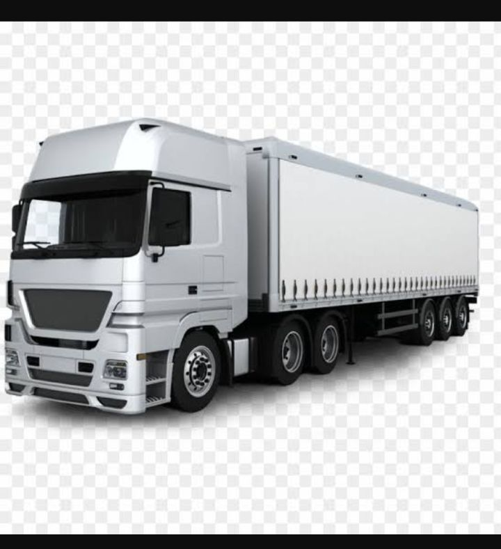
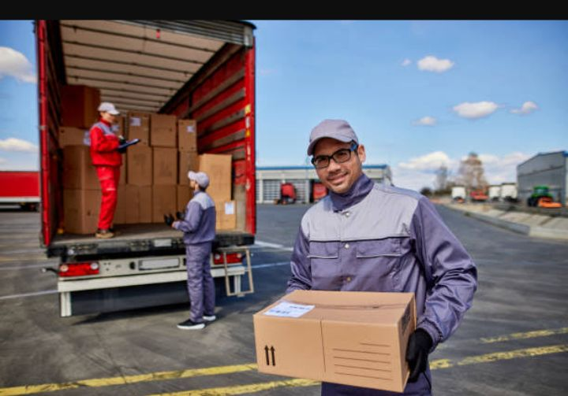
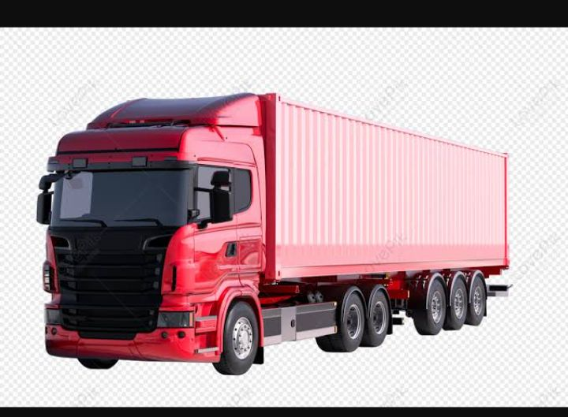
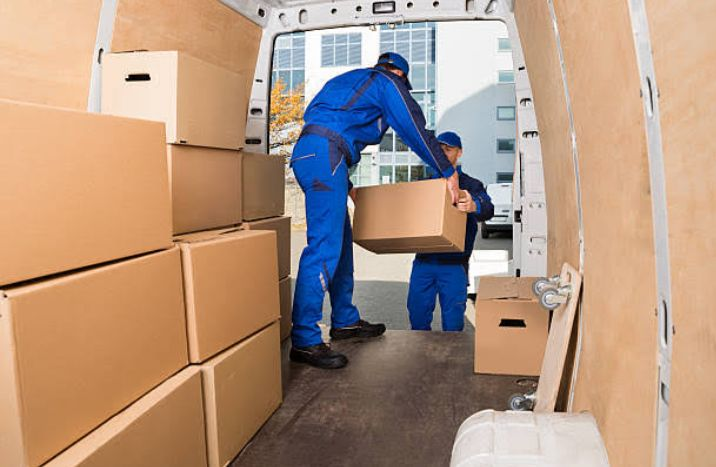
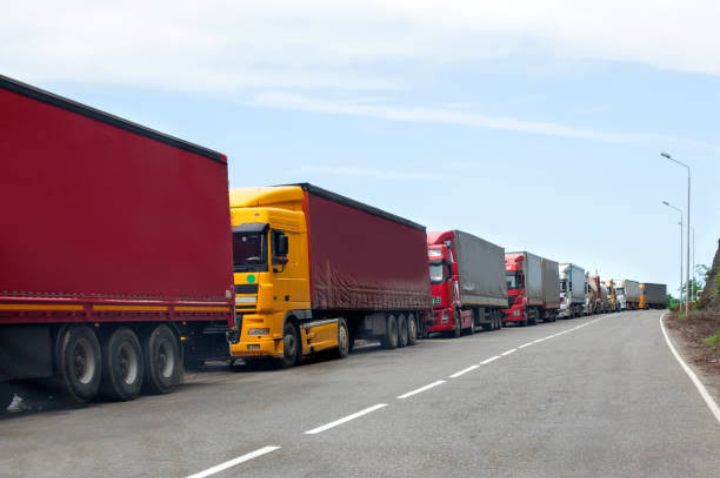
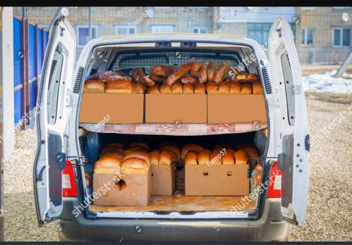
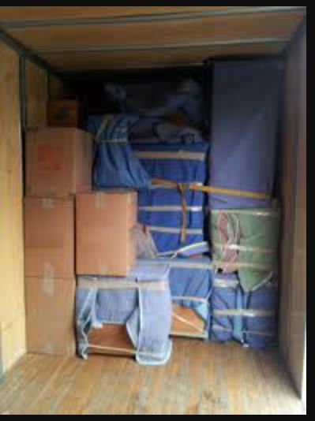

Gie Gie Transport Services
Home Page
Contacts
Transport Hire

At Gie Gie Transport we offer affordable and competitive rates that any ordinary man can afford. Our trucks are the best
operating with minimum break downs and we always have a back up plan in case of a break down. All goods ferried are Insured for loss and
damage in transit. Our drivers have years of experience in handling and transporting of good.

We make sure goods are packed safely and proffessionaly to avoid any damages or losses during our trips or transit. Our
drivers and loaders are the best.


Our trucks are enclosed and suitable for boxes, crates, eggs and bread. All can be transported safely without getting damaged.

Our trucks have all the necessary papers to take your goods across the border. Do not hesitate to get a quote.

Bakeries and soft drink companies can hire our trucks as they are closed so suitable for their goods.

Furniture and home equipement we transport across the continent and around the country.